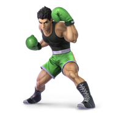

Little Mac
Win Conditions
- Keeping a stock advantage.
- Sending him offstage can almost always lead to a kill if punished correctly. Hard to cover multiple
options so you usually have to read or bait an option out.
-Avoiding interaction when at an advantage.
Focus:
- Capitalizing on edge guards. Looking out for mix-ups on recovery. (Side B is very hard to challenge)
- Using up Mac's resources offstage. (One jump, side b, air dodge)
- Trades on ledge can kill him.
- Avoiding interactions in neutral due to his speed, kill power, and overall neutral.
- His up-b doesn’t always snap to ledge unless spaced well. Easy to hit with dsmash, dash attack.
Neutral:
- Try to stay on platforms when you have an advantage. Fish for mistakes or risky options from him to
punish and rack up more damage or a kill. He has no real answer to platform camping. He has to
pressure you with upsmash or commit to an aerial or side b or even up b sometimes.
- Avoid air dodging out of dtilt and uptilt. Up b is almost unpunishable, but he can kill you with up
b so look out at high percents. Up B will be your go to option most of the time. If necessary air
dodge to the platforms though he can punish it if he waits.
- Dash attack is really good to get him offstage but risky. Can follow-up with another DA at low
percents to catch first landing. Most macs won't jump so this can work.
- Avoid rolling since it's too slow. Rely on up-b to get out of most situations EXCEPT dtilt KO punch,
you need the iframes at f3 to avoid. Air dodge is very laggy so he can punish it if he reacts or
waits.
- When platform camping, drop down fair is really good pressure and pretty safe. Just watch out for
smash attacks or antiairs.
- Wait 4 seconds for KO punch "armor" to go away, then hit him with anything that will put
him in tumble. This will get rid of it.
- Don't let him pressure your shield. He can break it. Up-B to get out of pressure. He can't break
your full shield except with full charge downsmash probably. If you start getting shield pressured
try to escape to avoid shield break.
Disadvantage:
Ledge
- Watch out for dsmash and dtilt at ledge. He can 2frame you easily. Mix up recovery timings with
bucket or jumping.
- Ftilt at ledge will kill early and is active. Mix up your recovery options from ledge. Dtilt is
frame 3 which is unreactable so don't wait too long or he'll kill you off a dtilt.
- Can armor through get up attack. Upsmash hits ledge. Try to get off ledge ASAP since his kill power
makes it unsafe.
- The character overall is very dangerous at ledge and has the speed to cover almost everything though
he does have to commit to punish so actively mixing it up is always good.
Juggling
- Mac can't juggle luhmao.
- If in the air though he will try to catch landings. He usually tries to take your jump but it's not
too much of a problem with up b.
- Don't Dair, it is super punishable by him. Either land on a platform or throw out a hitbox safely to
protect yourself like fair or bair, just be aware of his armored smash attacks.
Advantage:
Ledge
- Dash attack sends at a good angle. May lead into bair. Side B might outrange your dash attack.
- Dsmash can 2 frame, but sweetspot will send up. Sour spot will kill him.
- Punish get up attack on shield with dtilt. Will most likely kill him at mid% and up. Upsmash at 0 to
mid % for damage.
- Down smash at ledge is good.
- Chef covers ledgehang, roll (spaced), jump, regular getup. He can side b through it though if given
the chance since it’s disjointed it will always beat the bacon. It forces an early option on ledge
though.
Offstage
- Bair is usually the way to go. Will beat anything he can throw out if spaced well. Side B is the
hardest thing to challenge. Watch out for counters too.
- All he has are mixups. Bair or force an option then punish. (Counter, Side B, Airdodge, Up-B, Jump)
- Watch out for walljump recoveries on some stages. Dair can cover it pretty well if timed right, but
will send up. Reverse dair to bounce him off stage.
- Dragdown nair and bair will kill him. Just be ready to tech if he side b's early.
- When you're low and he's about to don't hit him with up-b as a mixup. There's a chance he'll try
teching and airdodge and die instead.
Juggling
- Nair, Upair.
- If he starts using Neutral B armor to get down you can catch landings with dash attack. Try to catch
landings with grabs. Throw offstage if near ledge or dthrow at low percents for more nair chains.
- If he's over you just up-b to get him away from you if you're not sure what he's up to. Up air is
okay too if hes above you or just nair.
Misc.
- Dtilt KO punch is true unless you airdodge. Try to AD towards a platform or offstage.
- Tech everything and mix it up. Jablocks are really good for him and tech chases can kill you or rack
up lots of damage. Fair, bair are used for jab lock setups sometimes.
- Can't shield KO Punch. Has a lot of lag on whiff.
- Very fast character and can outspeed your aerial movement.
Stages
Battlefield:
- Can camp him out hard.
- Watch out for wavelandings.
- His Up-B will kill at higher percents on the top platform.
Final Destination
Town and City
- It's an okay stage, but when the platforms disappear, Mac thrives. Stall for platforms. They can
save mac too when returning sometimes.
- Small blastzones at ledge benefit him more.
Smashville
- Really good platform to avoid interaction.
- He can't reach the platform with upsmash and has to jump which is good for us.
Pokemon Stadium 2
- Generally okay. Upsmash reaches the platforms but only if you are directly above him.
- Access to walljumps.
- Overall a decent stage.
Yoshi's Story
- Avoid this stage if possible. Triplats are good but small blastzones will get you killed earlier.
Uptilt UpB kills very early. And gives him access to walljump.
- Easier for him to dsmash/dtilt you when recovering.
Kalos
- His worst stage for killing. Has walljump. Use platforms to cover options when edgeguarding.
- You live a lot longer on this stage.
Lylat